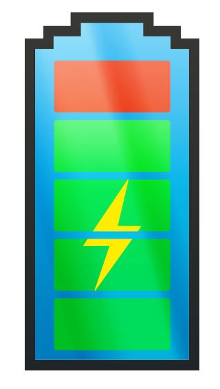

In het tweede semester (2017-2018) hebben we een groepswerk gemaakt over app-ontwikkeling. We hebben zelf het idee van onze app mogen kiezen. Voor ons werd dit dan
ChargeBy
In het kort zorgt deze app ervoor dat gebruikers deel van een netwerk kunnen worden die met elkaar stroom delen. Dit gebeurt aan de hand van bijvoorbeeld via de app beveiligde stopcontacten die aan de wand van de eigenaar zijn huis zullen geïnstalleerd worden. Door dan de app te gebruiken kan een gebruiker stroom krijgen van deze eigenaar.
Mijn persoonlijk werk in de groep zal hieronder vermeld worden. In het begin heeft iedereen in de groep zowat meegeholpen voor het concept van de app te ontwikkelen. Maar doordat we met acht groepsleden was de werkverdeling en initiatief nemen soms toch nog moeilijk. Mijn persoonlijke taak in dit project was kijken of er al apps bestonden die hetzelfde concept hadden als onze applicatie.
Er zijn een paar soortgelijke ideeën, variërend van apps waarmee je bars, koffiehuizen, enz. Kunt vinden met gratis oplaadmogelijkheden, naar apps die een routebeschrijving geven naar openbare elektriciteitsstations waar gemotoriseerde voertuigen kunnen worden opgeladen. PlugShare is de laatste. Het is de meest bekende nauwkeurige en complete laadstationkaart wereldwijd. Het heeft 's werelds grootste en meest nauwkeurige oplaadkaart (meer dan 140.000 openbare stations inclusief alle grote netwerken in Noord-Amerika en Europa). De app bevat compatibiliteitstests, real-time weergaven van de bruikbare stations, beoordelingen van andere stuurprogramma's, een gebruiker uitbreidbare database (gebruikers kunnen nieuwe laadstations toevoegen als ze deze ontdekken). Er is ook de app EV Charging die hetzelfde is als PlugShare maar niet zo bekend is.
Wat onze applicatie bijzonder maakt, is dat de laadstations niet exclusief eigendom zijn van de overheid of bedrijven, maar ook van de burgers. Dit stimuleert mensen om stopcontacten aan de buitenkant van hun huis te installeren en aan te sluiten op de app. Dit stopcontact wordt aangesloten op het elektrische systeem van hun huis en verhoogt hun elektriciteitsrekening. Hier proberen mensen hun eigen elektriciteit te creëren met behulp van groene energie (elektriciteit geoogst uit hernieuwbare bronnen die beschikbaar zijn via technologieën zoals zonnepanelen en windmolens). Gebruikers zullen ChargeBy moeten installeren om toegang te krijgen tot deze binnenlandse, crowd-sourced laadstations, en dit zorgt voor een robuuste structuur om winstgevende strategieën te gebruiken (zoals gemarkeerde tarieven (luxebelasting)) die de gebruiker ten goede komen.